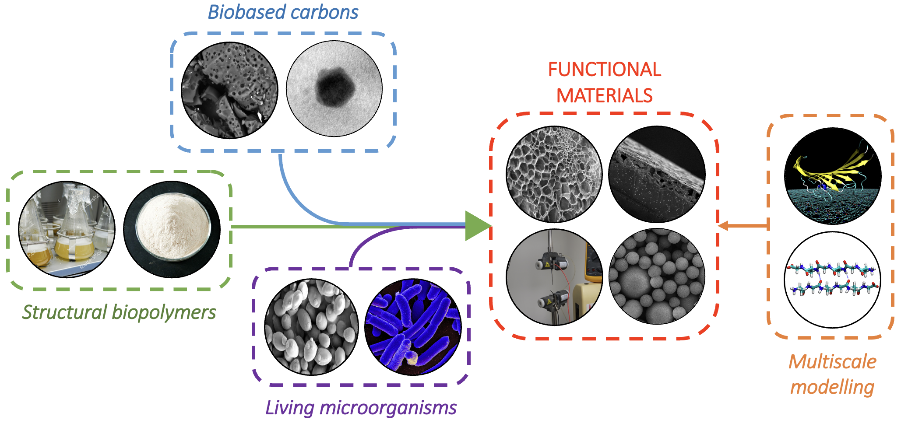
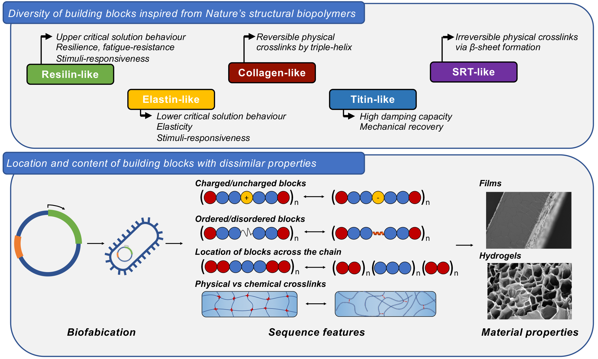
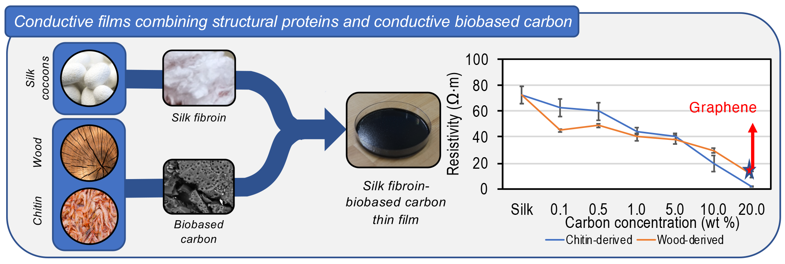
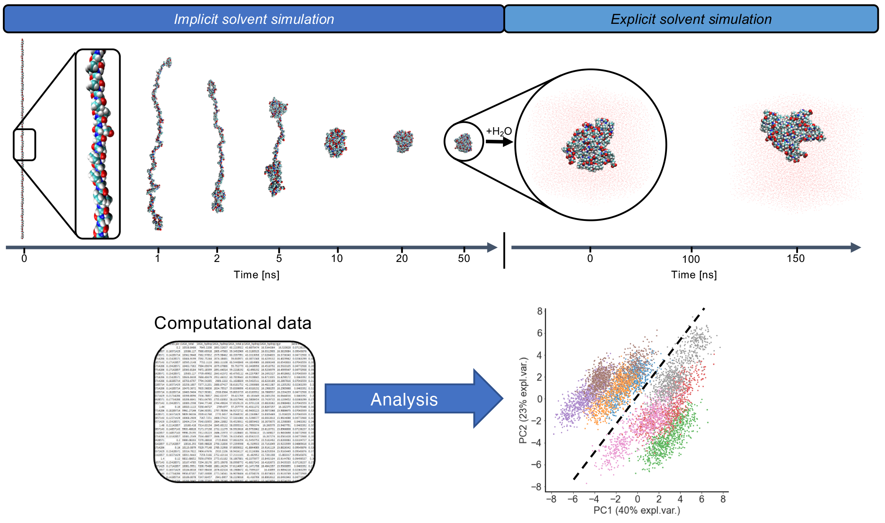

Our lab is part of the Department of Chemical Engineering, the Center for Nature-Inspired Engineering (CNIE), and the Manufacturing Futures Lab (MFL). We use biopolymers to develop functional materials, alone or in combination with additives like (i) microorganisms that synthesise functional molecules to create living materials; or (ii) biobased materials obtained from the conversion of low-value bioresources to create composite materials. The aim is to invent new materials with tailored nanostructures, controlled interfacial chemistry, and advanced physicochemical or biological functionalities that can interact with the environment, other biomolecules, or living tissues. Our experimental work is supported by multiscale computation to unveil structure-property relationships at the atomistic and micrometer scale, connecting molecular-based nanoscience with the synthesis of such materials.

Read more about our research topics:
- Structure-property relationships for biopolymeric materials
- Living and composite biopolymeric materials
- Structure-property relationships for biopolymeric functional materials
Structure-property relationships for biopolymeric materials
Biopolymers have a propensity towards molecular self-assembly and self-organisation that underpins their ability in living organisms to generate natural functional materials with remarkable performance. Thus, these biopolymers are gaining increasing attention as alternative building blocks to replace fossil-based polymers as source of synthetic functional materials. Developments in molecular biology are making it increasingly possible to design e.g., novel recombinant protein-based biopolymers with controlled chemistry (e.g., silk-elastin-like polypeptides), and produce them via fermentative processes. We develop biopolymeric materials with adjustable mechanical properties, programmed functionalities, or the ability to adapt or respond to the environment. We use a range of chemical and physical characterisation techniques to develop a rational understanding of how the structures and dynamics of biomolecular assemblies are impacted by structural parameters (like amino acid sequence, molecular weight, crystallinity, crosslinking density) or extrinsic factors (such as humidity, oxidation, or enzymatic degradation).

Living and composite biopolymeric materials
Natural and synthetic biopolymeric materials can be combined with additives to enhance their functionalities. We are interested in two types of additives: (1) microorganisms capable of secreting functional molecules to create living materials; and (2) biobased carbons produced via hydrothermal processing (HTP) of waste bioresources to create composite materials.
On the one hand, microorganisms with tweaked biological functions can be developed and embedded in biopolymers to form living materials. These materials hybridise animate and inanimate elements, and display spatiotemporally dynamic architectures that grow and adapt to environmental signals. On the other hand, biobased carbons produced via biomass HTP display excellent performance for applications in energy storage, wastewater treatment, rheology modification, or structural reinforcement.

Structure-property relationships for biopolymeric functional materials
Hierarchical chemical details down to the nanoscale (e.g., chain topologies, interfacial interactions) of biopolymers are vital to develop a fundamental understanding of their large-scale assemblies and the behaviour on a meso- to macroscopic scale of materials developed from them. These details can be assessed by computational models that reveal their structure-property relationships. Moreover, embedding modelling into the early stages of material design can improve the time efficiency to develop new materials while reducing the cost for experimentation. We use computational models to understand phenomena that exist at a hierarchy of time- and length-scales in biopolymeric and composite materials, mainly through fully-atomistic and coarse-grained molecular dynamics (MD) simulations.
